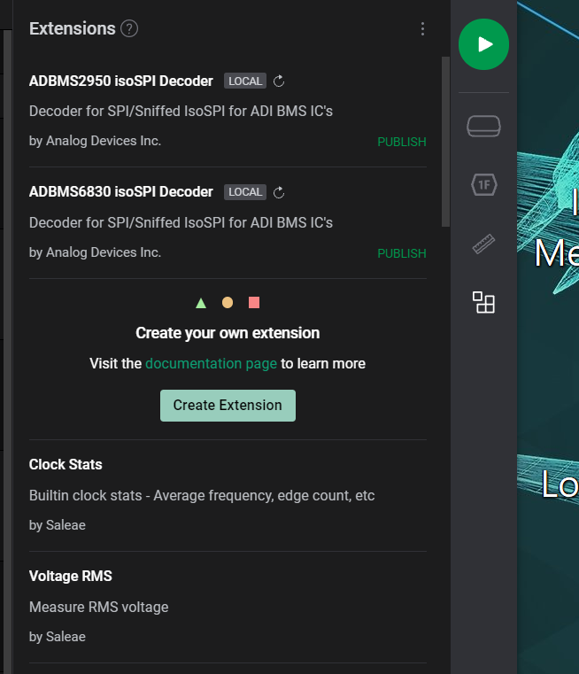
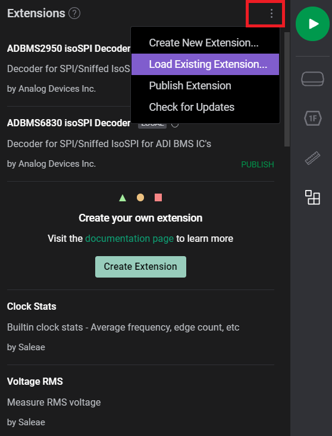

Saleae Logic Analyzer
One of the features of PyBMS is the ability to convert raw SPI commands to human readable data. This is possible within PyBMS, but also as a plugin for Logic 2 (the software for Saleae Logic Analyzers). These plugins can be found in saleae_logic_analyzer folder. To import them in Logic 2:
Open Logic 2 and make sure you have the latest version of Logic 2 (>= 2.3.4.4)
Select the icon with four squares in the right corner
Select the 3 dots in the upper corner and select Load Existing Extension.
Go to the saleae_logic_analyzer folder and to the device of choise. Select the file: extension.json (yes this file is very small)
You are now able to select a HLA (high level analyzer) to translate SPI to Human readable. To use it:
Settings
You can use the HLA for normal SPI but also for IsoSPI (depends on which you select it. Also select the input data (from which SPI you want to use it) and you should be ready to go.
Example
The grey bar on top is the result of the HLA. Here you can see the command and also the bitfields that are being used.

{kind=link}
{kind=link}
{kind=link}
{kind=link}